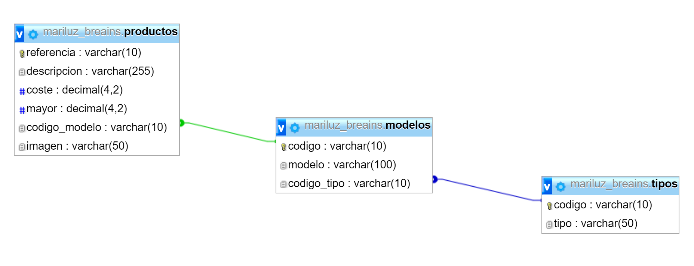

Bienvenidos a la asignatura Base de Datos
Proyecto BREAINS
Diseño de la base de datos
Abre tu panel de control para crear la siguiente base de datos en el servidor con cotejamiento UTF-8.
Abre phpmyadmin y crea cada tabla con cotejamiento UTF-8.
Todos los campos Varchar los tienes que crear con cotejamiento UTF-8. Cuando lo tengas creado, comprueba una vez más que está en UTF-8 y rellena las tablas.

Conexión en php con la base de datos
Primero haremos una carpeta breains en Filezilla y en local para ir guardando los archivos necesarios de nuestro proyecto.
1. Creamos una carpeta dentro de breains llamada includes donde guardaremos el archivo datos_conexion.php que vamos a crear ahora.
NOTA: datos_conexion.php contien 4 variables con el valor de tu servidor, usuario, contraseña y base de datos. Estos datos los utilizaremos posteriormente en conexion.php para crear la conexion con la base de datos.
2. En la carpeta breains, creamos el siguiente archivo llamado conexion.php para crear la conexión con la base de datos.
3. Sube los archivos al servidor y abre un navegador con tu URL seguido de breains/conexion.php. Si sale la página sin errores, es que se ha conectado correctamente.